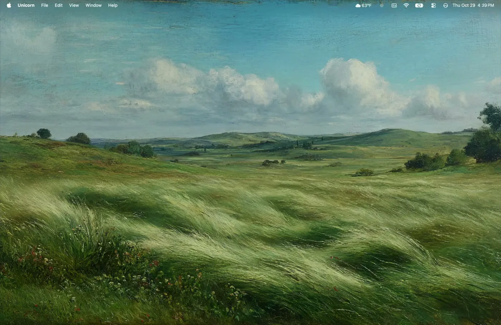

- Project
- Unicorn
- Tools
- Claude Code, Electron, Figma MCP
- When
- Spring & Fall 2026
- Status
- Shipped
Unicorn (opens in a new tab)
A desktop app that sits beside your terminal. Your agents log each experiment as they work, so what you build is kept for you and your energy stays on the work itself.